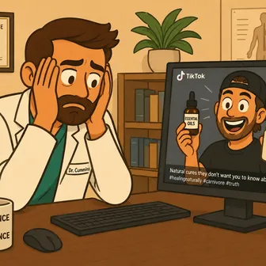
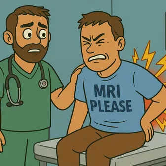
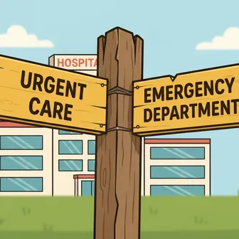

If we just met in the emergency department, I'm glad you're here.
Nobody plans to spend their day with me. The ED is loud, fast, and confusing, so I built this site to give you something useful while you wait: plain answers, a few tools for your phone, and a chance to know who is taking care of you.
Eric Cummins, MDEmergency physician, Banner Gateway Medical Center
Tap one and I'll point you to what helps most.
Waiting is the hardest part. Here is what is happening behind those doors, and how to be ready when your name is called.
You have told your story a few times by now. I promise somebody wrote it down. Here is what the quiet stretches usually mean.
Before you go, make sure you know what to watch for and who to follow up with. If anything is fuzzy, ask us. That is what we are here for.
You are part of the care team, whether anyone has said it out loud or not. Here is how to help.
Free, and they save as you type.
Nothing you type is sent to me or stored on a server. It stays on your phone.
Straight answers from the ED, with a few jokes I could not help.



Most people do not plan an ED visit the way they plan a vacation, so an honest review helps the next person know what to expect. It is completely optional.
Leave a Google reviewThis opens Google. This website does not collect or store personal health information.